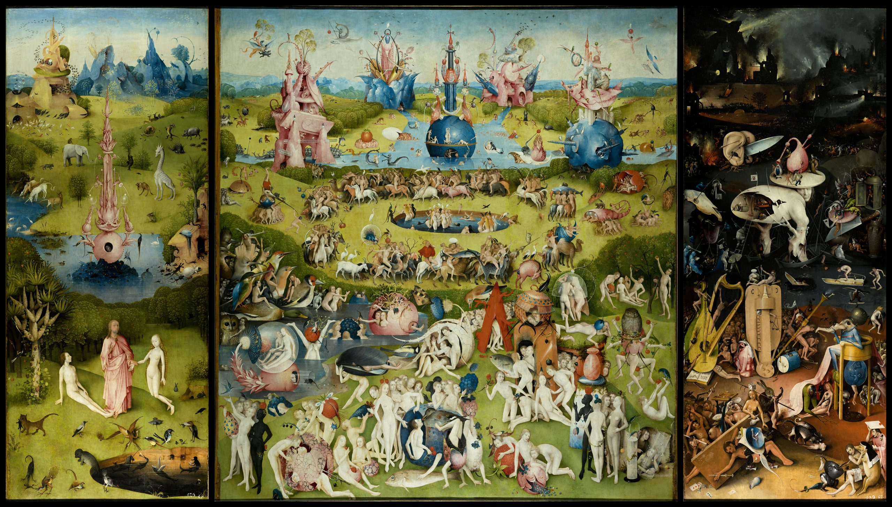
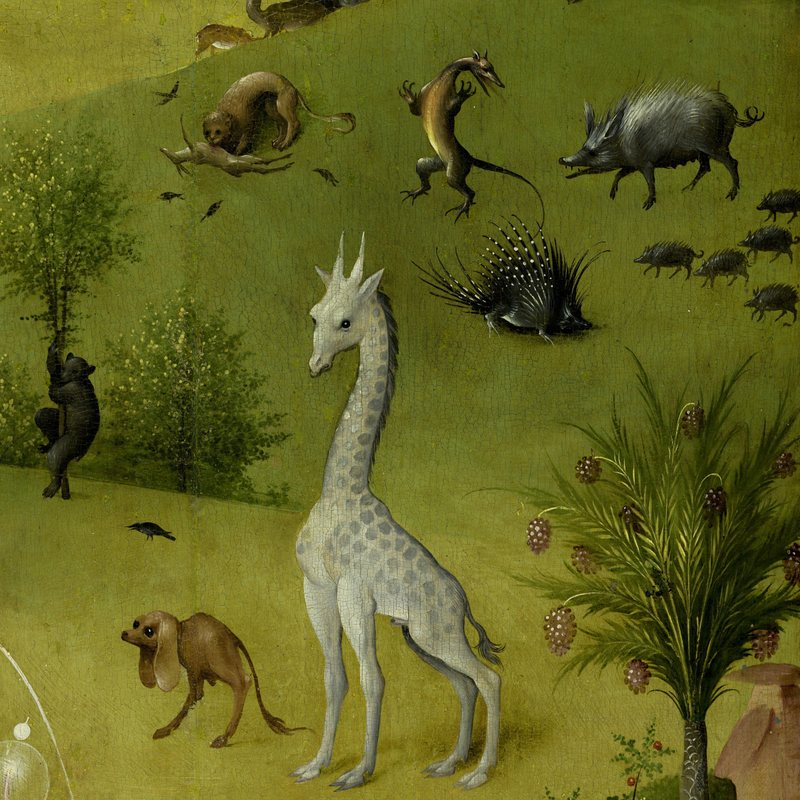
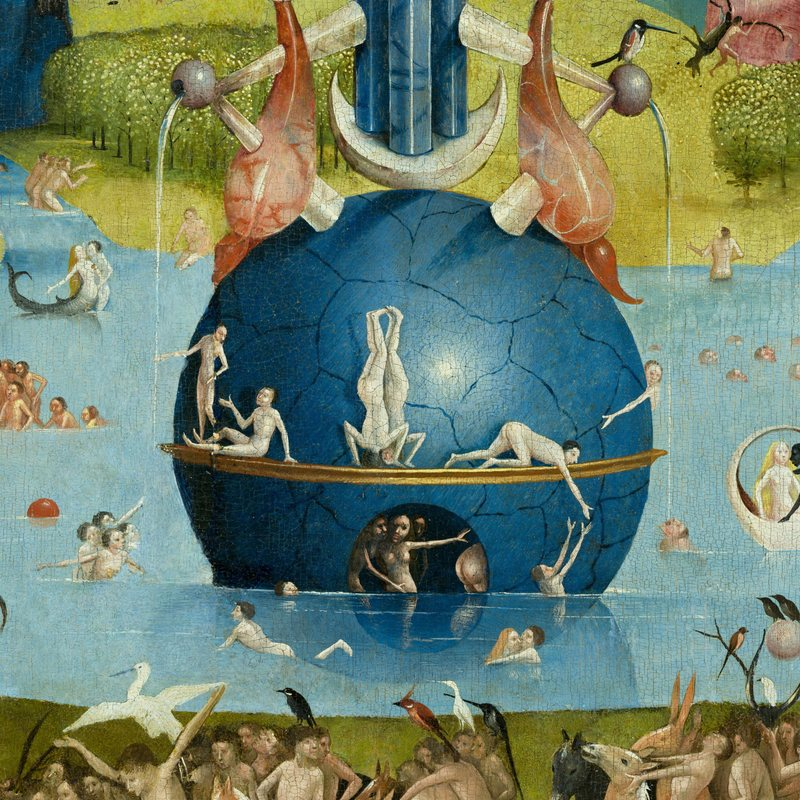
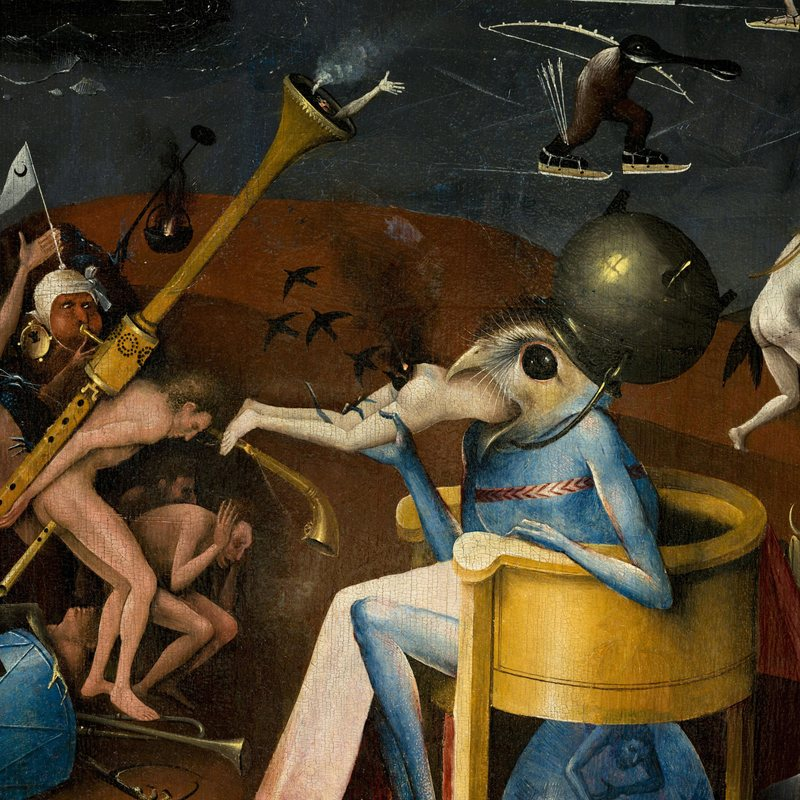

Croppie
Every picture has a better picture somewhere inside it.
Croppie is a small, typed image cropper for the browser. Drag, zoom, and cut out the part that matters.
Art books have done this for centuries. They call it a detail.
- Object
- Croppie, v3
- Maker
- Bay Informatics
- After
- Foliotek's Croppie
- Medium
- TypeScript on canvas
- Dimensions
- ~5 KB gzipped
- Requires
- Nothing else
- Credit line
- MIT License

Fig. 1Hieronymus Bosch, The Garden of Earthly Delights, c. 1490–1510. Oil on oak panels. Museo del Prado, Madrid. Public domain.
Outlines mark the three details below. Select one to open it in the cropper.
IPlates
Details
Three crops of Fig. 1, one from each panel.

Fig. 2Left panel. A giraffe wanders Paradise.

Fig. 3Center panel. Bathers in a blue sphere.

Fig. 4Right panel. The bird-headed Prince of Hell.
IIRoom
Make your own detail
- Drag to move around the painting.
- Scroll, pinch, or use the slider to zoom.
- Crop to keep what's inside the circle.
Fig. 5The cropper. Interactive.
appears here
Fig. 6Not yet cropped.
IIIAppendix
Notes
1.Installation
From npm, or straight from the repository.
# npm npm install @bayinformatics/croppie # or from git npm install github:bayinformatics/croppie
2.Use
Mount on any element, bind an image, take the result as a blob, base64 string, or canvas.
import Croppie from '@bayinformatics/croppie' import '@bayinformatics/croppie/croppie.css' const cropper = new Croppie(element, { viewport: { width: 200, height: 200, type: 'circle' }, boundary: { width: 300, height: 300 }, }) // Bind a file directly await cropper.bindFile(file) // Get the cropped result const blob = await cropper.result({ type: 'blob' })